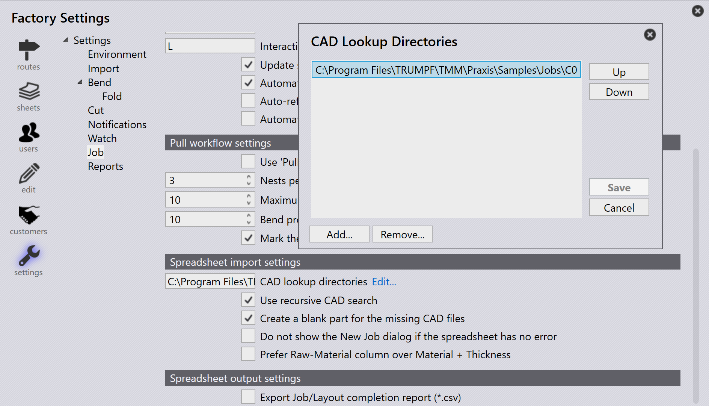

Εισαγωγή εργασιών
Εισαγωγή από csv ή xlsx
Μπορείτε επίσης να εισάγετε εργασίες σε κοινές μορφές κειμένου
-
Κάντε κλικ στο File → Open → Import Jobs, εμφανίζεται το παράθυρο διαλόγου Open Folder. Επιλέξτε
C:\Program Files\TRUMPF\TMM\Praxis\Samples\Jobs\C0\C0.csv. -
Αν όλα τα Εξαρτήματα υπάρχουν στη θέση του csv ή στους καταλόγους φακέλων αναζήτησης, εμφανίζεται το παράθυρο new job που εμφανίζει όλα τα εξαρτήματα που αντιστοιχούν στα πεδία του csv.
-
Τα εξαρτήματα που λείπουν αγνοούνται και δεν εμφανίζονται στο παράθυρο new job.
-
Αρχικά η κατάσταση Εξαρτήματος είναι Nascent.
-
Κάντε κλικ στο OK , τώρα τα εξαρτήματα εισάγονται στη Βιβλιοθήκη Εξαρτημάτων.
Create a blank part for the missing CAD files
Κατά την εισαγωγή εργασιών με υπολογιστικό φύλλο (.csv ή .xlsx), μπορεί μερικές φορές να έχετε γραμμές που αναφέρονται σε αρχεία CAD που δεν είναι διαθέσιμα στο σύστημα.
-
Για να το διαχειριστείτε αυτό, μεταβείτε στο Factory → Settings → Job, κάτω από το Spreadsheet import settings ενεργοποιήστε Create a blank part for the missing CAD files

Όταν επιλεγεί αυτή η επιλογή:
-
Αν λείπει ένα αρχείο CAD για οποιαδήποτε γραμμή κατά την εισαγωγή εργασίας, το σύστημα θα δημιουργήσει αυτόματα ένα κενό εξάρτημα στη θέση του ελλείποντος αρχείου CAD.
-
Στο παράθυρο new job, αυτά τα ελλείποντα εξαρτήματα επισημαίνονται οπτικά με κίτρινο χρώμα για να υποδείξουν ότι λείπει το σχετικό αρχείο CAD.
-
Το ελλείπον εξάρτημα θα εξακολουθεί να έχει τα χαρτογραφημένα του πεδία (όπως όνομα εξαρτήματος, υλικό, πάχος, ποσότητα, κ.λπ.) από το CSV. Ωστόσο, η κατάστασή του θα εμφανίζεται ως Nascent, που σημαίνει ότι είναι απλά ένα κενό σύμβολο κράτησης θέσης χωρίς καμία πραγματική γεωμετρία ακόμα.
Αυτό διασφαλίζει ότι η εισαγωγή εργασίας μπορεί να συνεχιστεί χωρίς σφάλματα λόγω ελλειπόντων αρχείων CAD — μπορείτε αργότερα να ενημερώσετε ή να αντικαταστήσετε το κενό εξάρτημα με το σωστό αρχείο CAD όταν γίνει διαθέσιμο.
Do not show the new job dialog if the spreadsheet has no error
factory → Settings → Job → Spreadsheet import settings→ Do not show the New Job dialog if the spreadsheet has no error
-
Όταν είναι επιλεγμένο αυτό το πλαίσιο ελέγχου, το σύστημα δημιουργεί αυτόματα τη νέα εργασία χωρίς να εμφανίζει το παράθυρο διαλόγου New Job αν το υπολογιστικό φύλλο δεν έχει σφάλματα (δεν λείπουν εξαρτήματα, δεν λείπουν ημερομηνίες ή μη έγκυρα δεδομένα).
-
Όταν το πλαίσιο ελέγχου είναι μη επιλεγμένο, το παράθυρο διαλόγου New Job εμφανίζεται πάντα για έλεγχο και επιβεβαίωση από τον χρήστη, ακόμα και αν το υπολογιστικό φύλλο δεν έχει σφάλματα.
Prefer raw-material column over material + thickness
factory → Settings → Job→Prefer Raw-Material column over Material + Thickness
-
Όταν είναι επιλεγμένο αυτό το πλαίσιο ελέγχου, το σύστημα αναμένει ότι το υπολογιστικό φύλλο χρησιμοποιεί τη στήλη Raw-Material (για παράδειγμα, Steel-20). Αυτό σημαίνει ότι ο τύπος υλικού και το πάχος πρέπει να συνδυάζονται σε μία τιμή σε μία στήλη.
-
Όταν το πλαίσιο ελέγχου είναι μη επιλεγμένο, το σύστημα αναμένει ότι το υπολογιστικό φύλλο έχει ξεχωριστές στήλες για Material και Thickness (για παράδειγμα, Steel και 2.00). Το σύστημα τα συνδυάζει εσωτερικά κατά την εισαγωγή.

Φάκελος επιτήρησης με CSV/XLSX
-
Στο factory → Settings→ Watch settings επιλέξτε το Enable 'Live Folder' και το Watch sub-folders also.
-
Ορίστε τη διαδρομή του φακέλου επιτήρησης (UNC ή αντιστοιχισμένη μονάδα δίσκου).
-
Στο Spreadsheet import settings, επιλέξτε Import spreadsheet from 'Live Folder'.

-
Επιλέξτε Import Jobs από τις επιλογές Spreadsheet Import.
-
Αντιγράψτε το
C:Program Files\TRUMPF\TMM\Praxis\Samples\Jobs\C0\C0.csvκαι επικολλήστε το στον Φάκελο Επιτήρησης. -
Το σύστημα ελέγχει το CSV και προσπαθεί να δημιουργήσει την εργασία αυτόματα.
-
Αν λείπει το αρχείο CAD, δεν δημιουργείται εργασία διότι δεν βρέθηκαν τα απαιτούμενα δεδομένα CAD.
Κατάλογος αναζήτησης CAD & αναδρομική αναζήτηση CAD - μη διαμορφωμένο
-
Στο factory → Settings → Job → Spreadsheet import settings, αν δεν έχει οριστεί CAD lookup directories και δεν χρησιμοποιείται το Use recursive CAD search, το σύστημα δεν αναζητά αρχεία CAD αυτόματα.
-
Αν το πλαίσιο ελέγχου Create a blank part for the missing CAD files είναι επιλεγμένο, η εργασία θα δημιουργηθεί ακόμα και όταν λείπουν αρχεία CAD.
-
Σε αυτή την περίπτωση, όλα τα εξαρτήματα της εργασίας θα δημιουργηθούν ως nascent (κενά) εξαρτήματα — δηλαδή δεν έχουν γεωμετρία επειδή δεν ήταν δυνατόν να βρεθούν τα αρχεία CAD.

Κατάλογος αναζήτησης CAD & αναδρομική αναζήτηση CAD - διαμορφωμένο
Όταν το CAD lookup directories έχει οριστεί σε (C:\Program Files\TRUMPF\TMM\Praxis\Samples) και το Use recursive CAD search είναι ενεργοποιημένο κάτω από το factory → Settings → Job → Spreadsheet import settings:
-
Το σύστημα αναζητά αυτόματα τον καθορισμένο φάκελο και όλους τους υποφακέλους του για τα απαιτούμενα αρχεία CAD που αναφέρονται στο υπολογιστικό φύλλο.
-
Το Create a blank part for the missing CAD files είναι επίσης ενεργοποιημένο, οπότε αν οποιοδήποτε αρχείο CAD εξακολουθεί να μην βρίσκεται, το σύστημα θα δημιουργήσει ένα κενό εξάρτημα ως σύμβολο κράτησης θέσης.
